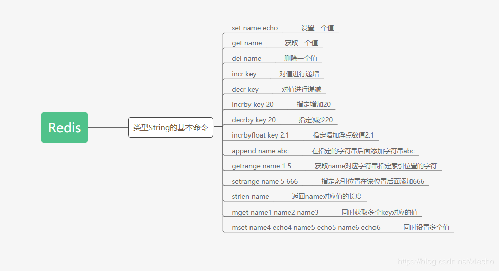
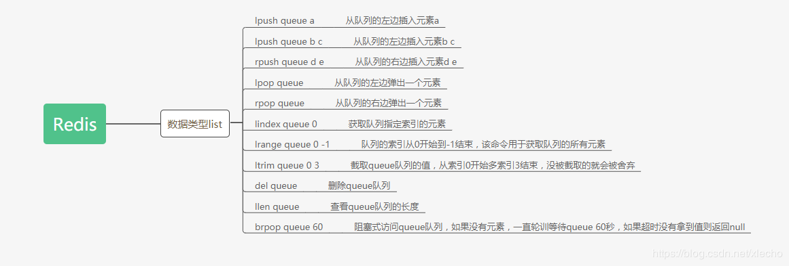
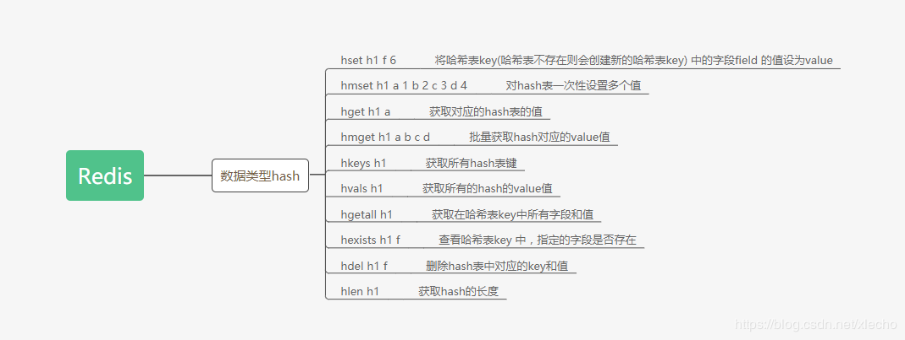

echo编辑整理，欢迎转载，转载请声明文章来源。欢迎添加echo微信(微信号：t2421499075)交流学习。 百战不败，依不自称常胜，百败不颓，依能奋力前行。——这才是真正的堪称强大！！！
最基本也是最常用的数据类型就是String，对应的操作命令也比较简单的,有get/set/del等;它的对应的值可以是任何种类的字符串，最大保存长度512MB。基本命令的使用如下：
set name echo
get name
del name
set key 1
incr key
decr key
incrby key 20
decrby key 20
incrbyfloat key 2.1
set name ab
append name c
getrange name 1 5
strlen name
mget name1 name2 name3
mset name4 echo4 name5 echo5 name6 echo6
setnx name echo
如果name存在就返回0存入不成功，如果name不存在就返回1存入成功。基于该特性我们可以用它来实现分布式锁。但是注意：使用改特性也有一个缺点就是，可能会造成死锁。如果我们在使用过程当中，使用del key释放锁，有可能会释放锁失败，导致其他操作永远获取不到锁。当让我们也可以对ke设置过期时间，但是也会有相同的问题。解决方案：
对于该数据类型，我觉得用list一点也不贴切，应该叫做：有序的队列，才合适。毕竟list是无序的，而且也没有先后一说。基本操作命令如下:
lpush queue a
lpush queue b c
rpush queue d e
lpop queue
rpop queue
lindex queue 0
lrange queue 0 -1
ltrim queue 0 3
del queue
llen queue
brpop queue 50
brpop queue 60
如果queue队列中存在元素，直接弹出最右边的按个元素，如果不存在，轮询等待60s。超时，直接返回null。该数据结构有一个明显的特点，那就是有序，不管是从左边存入还是右边存入，都能够有效的实现队列的进出。我们可以看到最后一个条命令，它其实是redis提供的一个高级操作,利用list队列的特性，实现了阻塞式访问，我们可以使用该功能做一个简单的发布订阅功能。如果存入数据作为发布消息，使用brpop阻塞式访问来订阅。
Redis中Set 是 String 类型的无序集合。该集合有set集合的属性，元素唯一， 所以对应的redis set数据成员是唯一的，这就意味着集合中不能出现重复的数据。
sadd myset a b c d e f g
smembers myset
scard myset
srandmember key
spop myset
srem myset d e f
sismember myset a
sdiff set1 set2
sinter set1 set2
sunion set1 set2在set中，元素都不是重复的，所以我们可以用它来记录一些唯一的值。这几个基本的命令里面我们可以看到有一个spop myset 随机弹出一个元素，利用set的唯一性，和随机弹出元素的特性，我们可以使用set集合实现一个抽奖活动。将所有人的id存入set集合中，然后使用spop随机弹出元素，弹出的元素id就是中奖人。
zset和Set类型极为相似，它们都是字符串的集合，都不允许重复的成员出现在一个Set中。它和set集合的区别只去在于zset是有序的，set是无序的。而且set的存储和zset的存储不一样
zadd myzset 10 java 20 php 30 ruby 40 cpp 50 python
zrange myzset 0 -1 withscores
zrevrange myzset 0 -1 withscores
zrangebyscore myzset 20 30
zrem myzset php cpp
zcard myzset
zincrby myzset 5 python
zcount myzset 20 60
zrank myzset java
zscore myzset javazset是一个有序的集合，它的排序是根据score来进行的，所以我们可以使用该特性来实现一个最热文章的功能，当文章的热度上涨之后，我们对文章对应score来进行递增即可。
Redis的哈希数据类型存储的是一个string类型的field和value的映射表，hash适合存放对象
hset h1 f 6
hmset h1 a 1 b 2 c 3 d 4
hget h1 a
hmget h1 a b c d
hkeys h1
hvals h1
hgetall h1
hexists h1 f
hdel h1 f
hlen h1
hash的操作和我们java开发中操作map很类似，比如添加一个key为h1、field为f、value为6的hash值，在java中就相当于创建一个名字为h1的map，存入key为f，value为6的键值对。该数据结构的特点很适合我们在业务中存放对象，比如使用他来实现购物车。将hash设计成为后面这种模式即可：key：用户 id；field：商品 id；value：商品数量。商品在购物车中的数据量使用如下命令来实现即可
对我们的hash值来进行加1
hincrby h1 d 1
对我们的hash值来进行减1
hincrby h1 d -1做一个有底线的博客主